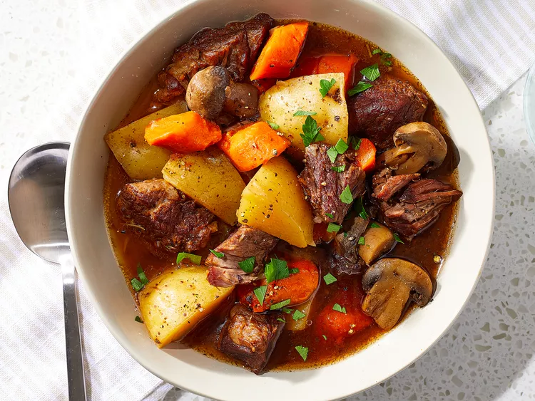

Beef Stew

A bowl of beef stew
Ingredients
- 3lbchuck roast,cut into 2-inch chunks
- 1tspkosher salt
- ½ tspcoarse ground black pepper
- 2tbspflour
- 2tbspunsalted butter
- 2tbspcanola oil
- ½yellow onion,chopped
- 4garlic cloves,minced
- 2carrots,cut into 2-inch chunks
- 2Yukon potatoes,chopped
- 4cupsbeef broth
- ¼cuptomato paste
Instructions
- Preheat the oven to 325 degrees F and season the beef chunks with salt and pepper before dredging in
flour.
- Add the butter and canola oil to a large dutch oven on medium heat and brown the beef on all sides in
batches for about 3 to 4 minutes on each side.
- Remove the last batch of the beef and add in the onions, garlic, and carrots and cook for 2 to 3 minutes
until slightly caramelized before adding the potatoes in along with the broth, tomato paste, bay leaf,
thyme, and Worcestershire sauce and stirring to combine.
- Add the beef back into the pot, cover and cook in the oven for 3 hours. Remove the bay leaf.
- Serve warm, and enjoy!